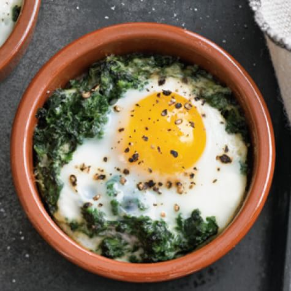

Egg Dish Recipe

Description
This recipe is one I found on tiktok, which is a delicious addition to your breakfast or brunch repetoire. While you may feel like you are indulging with the heavy cream and sprinkle of cheese, the spinach helps you get some essential nutrients.
I dont make it super often, as it does take a while to bake, but when you cook it just right, you’ll want to eat 3 of them in a row!
Ingredients
- Egg
- 1 cup spinach
- Boursin cheese
- 1 tbsp heavy cream
- 1 slice sourdough bread
- Olive oil
Steps
- Preheat your oven to 375 degrees Fahrenheit
- Cook the spinach on the stovetop
- Line the bottom of your rameken with spinach like a nest for the egg.
- Crack your egg into the rameken
- Pour the heavy cream on perimeter of the top of your egg
- Sprinkle the cheese on top
- Bake for 7 minutes
- While that bakes, drizzle olive oil onto bread
- Toast the bread in a pan until golden brown and crispy
- Remove egg from oven, let cool and serve immediately